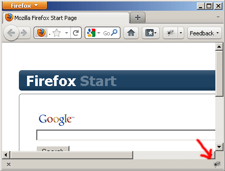
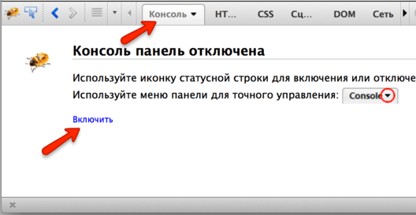
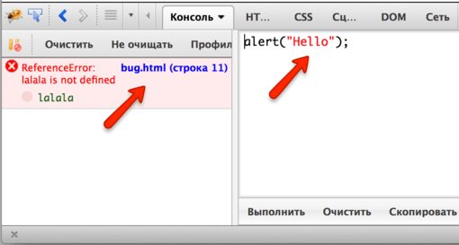
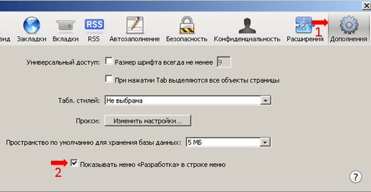

При разработке скриптов всегда возможны ошибки… Впрочем, что я говорю? У вас абсолютно точно будут ошибки, если конечно вы – человек, а не робот.
Чтобы читать их в удобном виде, а также получать массу полезной информации о выполнении скриптов, в браузерах есть инструменты разработки.
Для разработки рекомендуется использовать Chrome или Firefox.
Другие браузеры, как правило, находятся в положении «догоняющих» по возможностям встроенных инструментов разработки. Если ошибка, к примеру, именно в Internet Explorer, тогда уже смотрим конкретно в нём, но обычно – Chrome/Firefox.
В инструментах разработчика предусмотрена масса возможностей, но на текущем этапе мы просто посмотрим, как их открывать, смотреть в консоли ошибки и запускать команды JavaScript.
Google Chrome
Откройте страницу bug.html.
В её JavaScript-коде есть ошибка. Конечно, обычному посетителю она не видна, нужно открыть инструменты разработчика.
Для этого используйте клавишу F12 под Windows, а если у вас Mac, то Cmd+Opt+J.
При этом откроются инструменты разработчика и вкладка Console, в которой будет ошибка.
Выглядеть будет примерно так:
- При клике на
bug.htmlвы перейдёте во вкладку с кодом к месту ошибки, там будет и краткое описание ошибки. В данном случае ошибка вызвана строкойlalala, которая интерпретатору непонятна. - В этом же окошке вы можете набирать команды на JavaScript. Например, наберите
alert("Hello")– команду вывода сообщения и запустите её нажатием Enter. Мы познакомимся с этой и другими командами далее. - Для перевода курсора на следующую строку (если команда состоит из нескольких строк) – используется сочетание Shift+Enter.
Далее в учебнике мы подробнее рассмотрим отладку в Chrome в главе Отладка в браузере Chrome.
Firefox
Для разработки в Firefox используется расширение Firebug.
-
Первым делом его надо установить.
Это можно сделать со страницы https://addons.mozilla.org/ru/firefox/addon/firebug/.
Перезапустите браузер. Firebug появится в правом-нижнем углу окна:
Если иконки не видно – возможно, у вас выключена панель расширений. Нажмите Ctrl+\ для её отображения.
Ну а если её нет и там, то нажмите F12 – это горячая клавиша для запуска Firebug, расширение появится, если установлено.
-
Далее, для того чтобы консоль заработала, её надо включить.
Если консоль уже была включена ранее, то этот шаг не нужен, но если она серая – выберите в меню
Консольи включите её: -
Для того, чтобы Firebug работал без глюков, желательно сначала открыть Firebug, а уже потом – зайти на страницу.
С открытым Firebug зайдите на страницу с ошибкой: bug.html.
Консоль покажет ошибку:
Кликните на строчке с ошибкой и браузер покажет исходный код. При необходимости включайте дополнительные панели.
Как и в Chrome, можно набирать и запускать команды. Область для команд на рисунке находится справа, запуск команд осуществляется нажатием Ctrl+Enter (для Mac – Cmd+Enter).
Можно перенести её вниз, нажав на кнопочку (на рисунке её не видно, но она присутствует в правом нижнем углу панели разработки).
Об основных возможностях можно прочитать на сайте firebug.ru.
Internet Explorer
Панель разработчика запускается нажатием F12.
Откройте её и зайдите на страницу с ошибкой: bug.html. Если вы разобрались с Chrome/Firefox, то дальнейшее будет вам более-менее понятно, так как инструменты IE построены позже и по аналогии с Chrome/Firefox.
Safari
Горячие клавиши: Ctrl+Shift+I, Ctrl+Alt+C для Mac – Cmd вместо Ctrl.
Для доступа к функционалу разработки через меню:
-
В Safari первым делом нужно активировать меню разработки.
Откройте меню, нажав на колесико справа-сверху и выберите
Настройки.Затем вкладка
Дополнительно:Отметьте
Показывать меню "Разработка" в строке меню. Закройте настройки. -
Нажмите на колесико и выберите
Показать строку меню.Инструменты будут доступны в появившейся строке меню, в пункте
Разработка.
Итого
Мы разобрали, как открывать инструменты разработчика и смотреть ошибки, а также запускать простые команды, не отходя от браузера.
Далее мы приступим к изучению JavaScript.